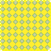

Sprite, Image
Sprite 你可以把它当作管动画的
Image 你可以把它当作管图片的
继承链
Sprite -> Image -> GraphicsComponent -> Component, 接下来会逐一讲解
GraphicsComponent
提供了最基础的渲染图片所需的信息和常用方法如: 位置, 旋转, 缩放, 锚点, 颜色系数, 是否翻转图像, 描边等
锚点
简单理解就是你在一张照片上插了根图钉, 照片的平移, 旋转, 缩放都是基于这个图钉的
类的属性字段方法说明
- Vector2 Position: 图片相对于
Entity.Position的位置 - Vector2 Origin: 图片的锚点位置(也就是图片的旋转缩放平移基于图片的哪个相对位置)
- Vector2 Scale: 图片的缩放
- float Rotation: 图片的旋转(以弧度为单位顺时针旋转(虽然感觉逆时针更符合直觉点))
- Color Color: 图片的颜色系数(渲染时会在原来图片基色的基础上乘上这个值, 所以不要想着用白色当系数图片就变成纯白的了)
- SpriteEffects Effects: 是否水平(竖直)反转图片
- float X, Y:
Position - bool FlipX, FlipY: 对
Effects的封装 - Vector2 RenderPosition: 实际的渲染位置
- Vector2 RenderPosition: 实际的渲染位置
- void DrawOutline(Color color, int offset = 1): 把自身往上下左右平移
offset, 并以color为颜色系数通过Render来绘制描边 - void DrawSimpleOutline():
offset为1个单位的黑色描边
Image
对 GraphicsComponent 的进一步封装, 主要提供了 Texture 纹理(图片)相关信息, 此时就可以根据之前的信息渲染出一张图片了, 就像你之前在 PassByRefill 那节做的那样
类的属性字段方法说明
- MTexture Texture: 材质(你可以把它当成一张
png图片) - virtual float Width, Height: 图片的宽(高)
- Image SetOrigin(float x, float y): 设置锚点
- Image CenterOrigin(): 设置锚点到中心(比较常用的情况, 所以你见到的锚点大多数是位于十字四宫格上的9个点)
- Image JustifyOrigin(Vector2 at): 单位化的锚点坐标(范围是
Vector2.Zero ~ Vector2.One)( 这样当我们需要把锚点设置到中心的时候就不需要用new Vector2(Width, Height) / 2了, 直接用new Vector2(0.5f, 0.5f)即可) - SetColor(Color color): 设置Color颜色
Sprite
对 Image 的进一步封装, 提供了对动画的管理(一连串图片形成一个帧动画, 再用 id 分组, 通过动画状态机实现动画间的跳转或是自身的 loop)
类的属性字段方法说明
里面有一层Animation类, 是对动画的简单封装
1 2 3 4 5 6 7 8 9 10 | |
- float Rate: 动画播放速度倍率(负数意味着倒放)
- bool UseRawDeltaTime: 是否使用现实时间流速(因为游戏可以调速嘛)
- Vector2? Justify:
Origin的额外偏移量 - Action
OnFinish: 当前动画播放完切换到其他动画时干的事 - Action
OnLoop: 动画开始循环时干的事 - Action
OnFrameChange: 动画播放下一帧时干的事 - Action
OnLastFrame: 播放到完动画最后一帧时干的事 - Action
- Atlas atlas: 图片来源于哪个Atlas
- string Path: 图片的相对路径
- Dictionary
- Dictionary
animations - Sprite.Animation currentAnimation: 当前动画
- float animationTimer: 动画应该开始多久了(用来处理
Delay的) - int width: 所有动画帧的最大宽度
- int height: 所有动画帧的最大高度
- Reset(Atlas atlas, string path): 恢复出厂设置, 设置新的图片路径
- MTexture GetFrame(string animation, int frame): 拿到对应
id动画的某一帧图片 - Vector2 Center:
new Vector2(this.Width / 2f, this.Height / 2f) - override void Update(): 核心逻辑, 建议是自己看源码
- void SetFrame(MTexture texture): 设置当前帧图片, 顺便调整一下锚点
- void SetAnimationFrame(int frame): 重置
animationTimer并把当前帧设置为动画的第frame帧 - void AddLoop(string id, string path, float delay, params int[] frames): 添加一个id为
id的动画, 并提供相应参数, 同时把Goto指向id形成loop, 如果有需要, 还可以指定某些帧来loop - void Add(string id, string path, float delay, params int[] frames): 无
loop版的AddLoop - MTexture[] GetFrames(string path, int[] frames = null): 通过相对路径加载图片序列, 给了
frames就加载对应的 - ClearAnimations(): 清空注册的动画
- void Play(string id, bool restart = false, bool randomizeFrame = false): 播放对应
id的动画(相同的不播放, 除非restart), 若开启randomizeFrame, 则会随机化animationTimer和CurrentAnimationFrame - void PlayOffset(string id, float offset, bool restart = false): 播放对应
id的动画并快进offset时间 - IEnumerator PlayRoutine(string id, bool restart = false): 播放对应
id的动画直到动画停止 - IEnumerator ReverseRoutine(string id, bool restart = false): 播放对应
id的动画直到动画停止 - IEnumerator PlayUtil(): 直到当前动画停止
- void Reverse(string id, bool restart = false): 将动画播放方向设置为逆序播放
- Has(string id): 查看是否注册过id为
id的动画 - void Stop(): 结束播放动画
- bool Animating: 是否可以播放动画
- string CurrentAnimationID: 当前动画id
- string LastAnimationID: 上一个动画id
- int CurrentAnimationFrame: 播放到当前动画的哪一帧了
- int CurrentAnimationTotalFrames: 当前动画总帧数
- override float Width, Height:
this.width,this.height - Sprite CreateClone(): 创建当前
Sprite的一个副本 - Sprite CloneInto(Sprite clone): 创建当前
Sprite的一个副本到clone中 - void DrawSubrect(Vector2 offset, Rectangle rectangle): 绘制当前Sprite的某个区域(有点蒙版的感觉)
- void LogAnimations(): 输出注册过的动画信息
接下来提供一个小示例, 我们需要先调整一下先前的文件结构
1 2 3 4 5 6 | |


- 接着我们在
PassByRefill中把跟Image有关的部分替换为Sprite, 然后你就得到了一个一秒一变的动画啦!
1 2 3 4 5 6 7 8 9 10 11 | |